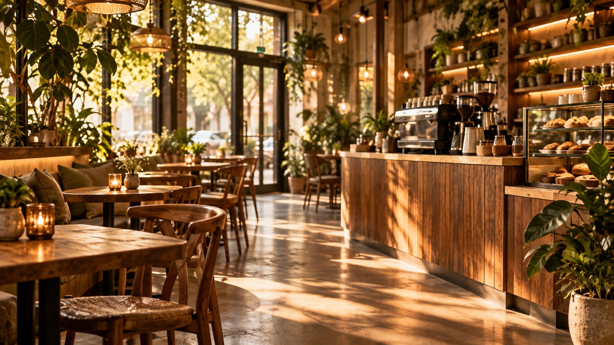

Descubra o café perfeito para você
Explore nossa curadoria de grãos selecionados das melhores regiões produtoras. Oferecemos opções sob medida para o seu paladar e o seu método de preparo preferido.
Conheça o Café & Grãos
Sobre Nós
Nascido da paixão pelo bom café, o Café & Grãos é mais do que uma cafeteria. Somos um projeto dedicado a aproximar a cultura do café especial das pessoas.
Nossa missão é apresentar cafés de qualidade, contar histórias de produtores e oferecer uma experiência simples, acessível e inesquecível.